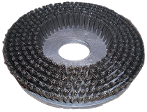
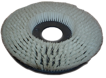

PRODUCTOS
Cerda
Cepillo para lustrar pisos :: obtenga el brillo de sus pisos previamente encerados.
Utilice el cepillo en pisos de madera, para obtener un lustrado superior.
En pisos duros, como marmol, terrazo, baldosas, obtendra un resultado excelente, sus pisos quedarán espectaculares con un resplandor soñado.
Recomendamos instalar cera de uso profesional para alto transito a efectos de disponer de un mayor rendimiento del lustrado.
Pita
Cepillo para lustrar pisos o lavado suave :: genere brillo de sus pisos o efectúe un lavado suave
Modo lustrado, al igual que el cepillo de cerda, puede utilizar al cepillo de pita para lustrar pisos, tanto de madera, como marmol, terrazo, baldosas, etc.
Modo lavado suave, para aquellos pisos que deben ser tratados cuidadosamente, éste tipo de material permite tratarlo convenientemente sin poner en riesgo la integridad de la superficie.
Recomendado para pisos con pintura epoxy, porcelanatos, ceramicas, plastificados, entre otros.
PVC

Cepillo para pvc pisos :: remueva la suciedad del suelo
El lavado de pisos requiere de la combinación de una herramienta mecanica como el cepillo y un producto químico acorde al tipo de suciedad, en este caso el cepillo de uso generico permite la remoción de suciedad sobre la mayoría de tipos de pisos.
Utilizar agua caliente generalmente facilita la limpieza.
Nylon

Cepillo para lavar alfombras :: apto para la mayoria de tipos de pelo
El nylon, material constitutivo, permite una efectiva friccion sobre la alfombra y resulta de suma importancia complementar el uso con un shampoo para alfombras que genere espuma.
Para la recollección de la espuma y suciedad removida por el cepillo, recomendamos utilizar una aspiradora polvo/agua para tal efecto.
Higienice y limpie convenientemente el cepillo al finalizar el trabajo, para restablecer el formato de los filamentos, debe anjuagar con agua caliente.
Acero

Cepillo para lavado profundo pisos :: remueva incrustaciones y suciedad profunda
Para aquellos casos donde el cepillo pvc no fuera suficiente por tratarse de un tipo de suciedad extrema, aqui es donde destaca el cepillo de acero.
Intenso, agresivo, de acción profunda. Ideal combinar con removedores quimicos para complementar la acción de limpieza de la suciedad evitando la fricción innecesaria prolongada de la superficie.
Disco de arrastre
Disco de arrastre para portar pads de limpieza
Herramienta indispensable para la utilización de discos de limpieza o 'pads cleaner'.
Sus multiples propositos, permiten tambien rasquetear pisos de maderas al poder soportar la viruta.